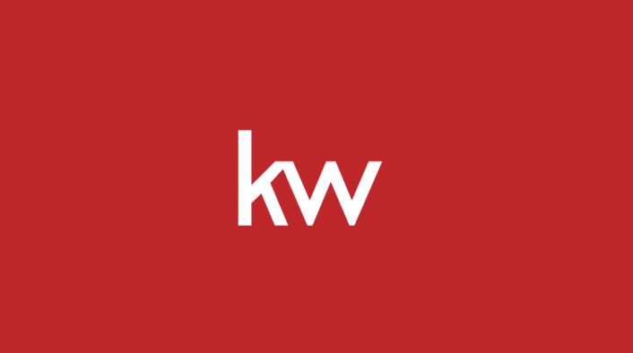
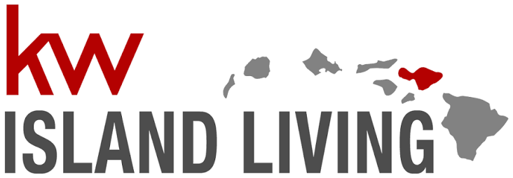
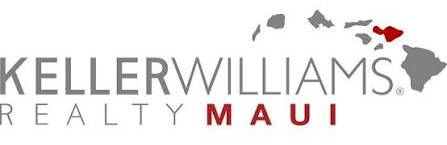

The situation
Legacy identity
New identity
One company, several old identities.
The merger was done on paper. In the market, it wasn't. Offices were still using their old names and logos, so what a client saw depended on which office they walked into.
Everything still carried the old brand. Listing presentations, flyers, market reports, buyer and seller packets, signage, social templates. Email signatures and business cards too.
But the real work was the agents. Every agent had to move onto the new brand — and most of them aren't designers. That's what I was hired for.
The identity everything moved onto


